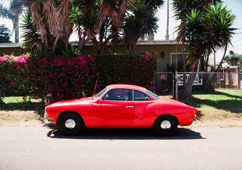
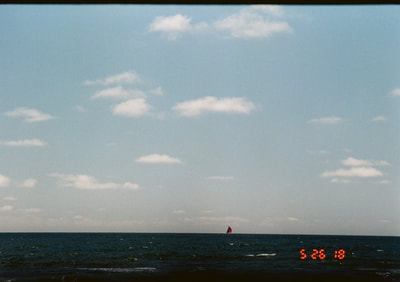
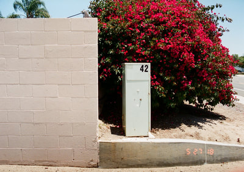
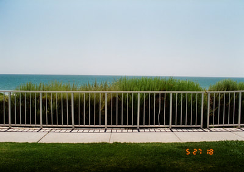
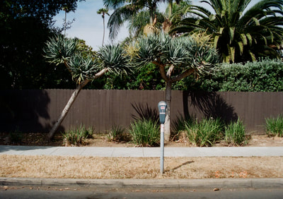
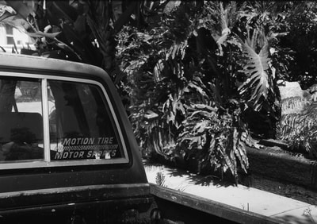
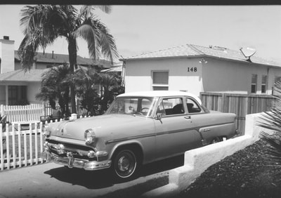
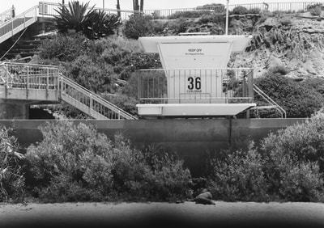

I did not want this camera at all. Then the images came back and my jaw dropped. The lens on this thing is insane.

I do not even know why I wanted this camera. Why get a half frame that is that big and bulky? Why does it shoot horizontal instead of vertical? Why would I want a full auto camera? Why would I want to look like a tourist carrying a vintage camcorder around? I still did not want anything to do with one — until a conversation with Mike Eckman about half frame 120mm photography blew my mind, and I realized the Yashica Samurai was the perfect test camera for my Mamiya 645. Within a few days I had one on the way. Kismet.
When the camera arrived the first thing I thought was — Holy f***, it is a zoom too. I had no idea. My next surprise was that it is actually an SLR. The lens accepts 49mm filters, which I already have a boatload of. I put a piece of electrical tape over the DX coding so it defaults to ISO 100, grabbed a circular polarizer, and went to work.
Here is where I was blown away. The image quality is insane with this camera. The lens has a little magic up its sleeve — images are clear, crisp, and saturated. They even have a little of that elusive 3D pop I hear people yammering on about. There is a weird vignetting at the bottom of many images, but I actually find this rather endearing. My Olympus Pens, as much as I love them, do not produce images quite like this.






